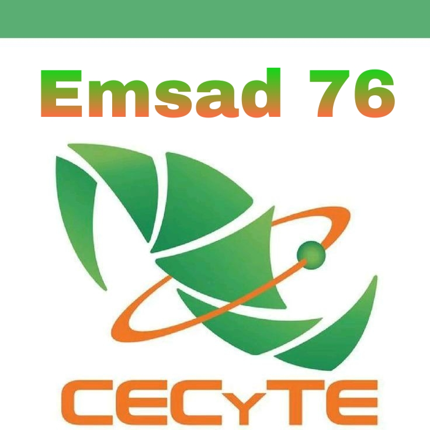
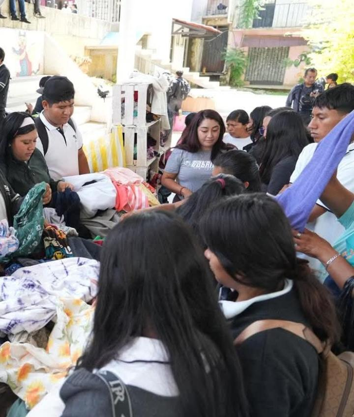
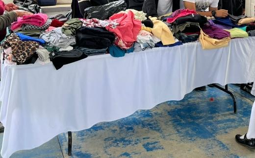
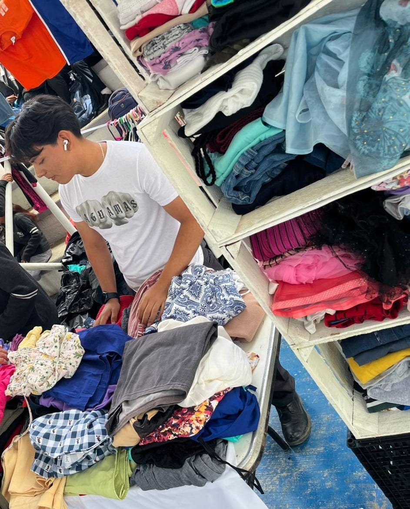

Con la finalidad de reutilizar materiales y darles un segundo uso según nuestra imaginación,se organizó un bazar de ropa donada por los alumnos del CECyTE EMSaD 76 Arrazola. Esta iniciativa no solo fomenta la creatividad y el reciclaje, sino que también fortalece la solidaridad entre la comunidad escolar y apoya a nuestro medio ambiente al reducir residuos y reutilizar prendas en buen estado a cambio de tapitas.